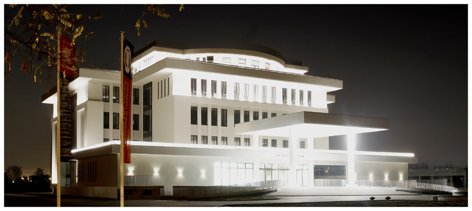

Welcome to the Library of SSST
NOTE: Access to the page is restricted to the students of SSST only. To continue, you have to login.
The Library of Sarajevo School of Science and Technology aims to provide a personalized, high quality service to support the University's teaching and research programmes and to encourage the development of creative and independent thinking. Our goals are to promote excellence in learning, to support the information, research, and curriculum needs of the University through an effective, collaborative collection development and management program, as well as to serve as a gateway to sources of information vital for research and scholastic achievement. For question regarding both our on-line and in-house collections and resources please contact us every day from 10AM to 5PM.